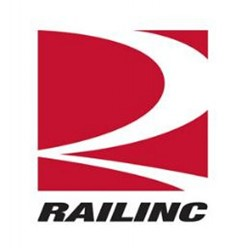

Archana Ganesh
Master of Science
College of Information and Computer Sciences
University of Massachusetts Amherst
Amherst, MA, USA
archanaganes@umass.edu
ganesh-archana
Greenleaf20
Archana Ganesh
Hi, I am Archana!
I am a Computer Science graduate student at the University of Massachusetts Amherst and I hold an undergraduate degree from the National Institute of Technology, Tiruchirappalli. I have 2+ years of experience as full-stack developer working for Citi and Railinc Corp. My dedication to the field extends beyond my work, as I regularly practice competitive programming on online platforms. I have been programming for 9 years since my high school.
I'm a strong advocate of the #AdoptDontShop movement and have spent eight years caring for sick and injured animals. During my undergraduate years, I was actively involved in a student-run volunteer group dedicated to feeding and providing healthcare to stray animals on our campus. In my leisure time, I indulge in fiction, with thrillers being my preferred genre. Additionally, I have dedicated six years to professional training in Carnatic music, demonstrating my commitment to excellence in various facets of life.
Education

University of Massachusetts Amherst
Sep '22 - May '24
Master of Science in Computer Science (GPA: 3.83 / 4.0)
Coursework: Advanced Algorithms, Distributed and Operating Systems, Computer and Network Security, Theory and Practice of Software Engineering, System Defense and Test, Secure Distributed Systems, Machine Learning, Applied Information Retrieval, Systems for Data Science, Reinforcement Learning

National Institute of Technology Tiruchirappalli
July '16 - Jun '20
Bachelor of Technology in Instrumentation and Control Engineering (GPA: 8.41 / 10.0)
Minor in Computer Science and Engineering (GPA: 8.6 / 10.0)
Coursework: Data Structures and Algorithms, Operating Systems, Database Management System, Computer Organization, Software Engineering, Big Data Analytics, Neural Networks and Fuzzy Logic, Digital Electronics, Microprocessors and Microcontrollers
Jawahar Higher Secondary School (CBSE) Neyveli
Jun '14 - May '16
94.8% in CBSE board examination conducted in 2016 and received Academic Achievement Award for the same
Secured an All India Rank of 9858 among 1.2 million students in JEE Mains 2016
Coursework: Computer Science, Mathematics, Physics, Chemistry, English
Academic Experience
Grading Assistant
- CS 520: Theory and Practice of Software Engineering
Feb '24 - May '24
Industry Experience

Railinc Corp
- Software Engineering Intern
I worked at Railinc Corp as a Software Engineering intern in the summer of 2023. I was involved in the enhancement of dashboard application that kept track of components that were running on the AWS. The application helps visualize how components of different types on AWS are being used by teams across Railinc. I engineered end-to-end logic using Angular, HTML, CSS, TypeScript and Java to move all or a subset of related components from one component to another while maintaining the component type-type relationship between them. I also wrote logics using PostgreSQL to filter components based on whether they were in service, region and based on whether or not the component was independent or had any dependent components.
Citi
- Software Developer
Aug '20 - Jul '22
After graduation from my undergraduate degree, I joined the Unified Desktop team of Citi as a Technical Analyst. I was involved with development of micro frontend applications which were in the conceptual stage. I developed internal functionalities as Angular micro frontend applications using HTML, CSS, TypeScript and single-spa which helped with feature modularization, easy code distribution and thereby reduced development and maintenance overhead. The applications were developed once and used across teams. This change of technology also helped reduce the load time of the applications by 60% and I was given the Takes Ownership award for my work on this project. I was also involved with pilot implementation of App Dynamics end user monitoring for the application to analyze the performance of users' end-to-end workflow and received the Succeeds Together award for the same.
During my second year at Citi, I was promoted to the role of Tech Program App Dev 1 and I also guided other teams with the development of micro frontend applications and made sure their applications followed business standards. I gave various Knowledge Transfer sessions to share my knowledge of Angular and the distributed architecture with other teams across Citi. I also helped onboard new employees and guided them while they got accustomed to the team. Throughout my time at Citi, I documented all the setup and technical details involved with my project which helped with my seamless exit to pursure my Master's degree.
Citi
- Software Development Intern
May '19 - Jul '19
During my internship at Citi in the summer of 2019, I was involved with a proof of concept which aimed at being the alternative for TIBCO BW based workflows. The idea was to leverage event-driven architecture of Java using RxJava to trigger the steps of the workflow. I migrated a component that cached trade details from TIBCO BW to Java. I used Spring Boot and developed it as a standalone service and used multi-threading to optimize performance by a factor of 1.5.
Projects
ToneSense

Feb '24
I developed this application as a part of Hack(H)er413 2024 hackathon conducted at the University of Massachusetts Amherst. It is a web based application developed by Angular, HTML, CSS and TypeScript to sense the sentiment behind text and audio into 28 different emotions. I used a Transformer based Wav2vec2 model for speech to text conversion and the roberta-base-go_emotions model for analyzing the sentiment behind a text.
Stock Trading System
Feb '23 - May '23
I developed this application during the Distributed and Operating Systems course in Spring 2023. I desgined a 3-tier stock trading server using Python which can handle requests from various clients using a thread-pool model. I replicated the services and selected a leader for them using a bully leader election algorithm. The requests from the frontend is sent to the leader which then maintained consistency between the replicas in order to handle failure gracefully. I also handled leader failure by initiating re-election when the leader does not respond. I implemented a LRU cache at the top level to cache lookup requests and this led to a decrease in the latency.
Stock Recommendation System
Feb '23 - May '23
I developed this application during the Systems for Data Science course in Spring 2023. I designed a stock recommendation system using Python that analyzes historical data using PySpark. I used LSTM, Random Forest and Factorization Machine models from SparkMLLib and PyTorch to predict the closing price of stocks. Among these the LSTM model performed the best in terms of Mean Squared Error and I used it to predict the closing price. I also built a dashboard for the users to easily view the historical trend for each stock.
Elevation-based Navigation System (EleNa)
Oct '22 - Dec '22
I developed this application during the Theory and Practice of Software Engineering course in Fall 2022. I built a navigation system using React and JavaScript to suggest the path of minimum elevation gain between locations given by the user. I implemented Dijkstra's and A* algorithms to find a path that has the minimum elevation gain within a user-specified range of the distance of the shortest path. I also designed User Interface where user can pick the locations on the map and view the chosen path.
Student Cafeteria application
Feb '20
I developed this application during a campus wide Hackathon at the National Institute of Technology Tiruchirappalli in 2020. During this period, in the dining halls, caterers manually recorded and marked students' attendance using physical cards. This process proved inconvenient, as students occasionally forgot to bring their cards. Students consistently carried their phones, prompting us to develop a mobile application for meal check-ins at the dining halls. This not only ensured convenience for students but also facilitated easier attendance tracking for caterers. Moreover, it provided a valuable tool for analyzing food consumption patterns and minimizing wastage. I designed the application using React Native and Django. The application has a QR generator for the students and a corresponding scanner for the caterers. Both the parties had a dashboard where they can view/edit schedule correspondingly and also send/receive feedback. I also employed Holt-Winters forecasting for predicting food wastage.
Reinforcement Learning based control of ball-beam system
Jan '20 - May '20
I worked on this project as part of my thesis when I pursued my Bachelor's degree in Instrumentation and Control Engineering with a minor in Computer Science. I chose this project as it is a perfect blend of both my degrees as I used Reinforcement Learning to control a ball and beam system. I developed a simulation environment of the servo based ball and beam system using Python and OpenAI gym. I trained the system using PPO2 and DDPG algorithms and was able to achieve a maximum reward of 0.99 on a scale of 0 to 1. The system was able to handle disturbances as well and was to able to stabilize. My work on this was published in the IEEE International Conference on Industrial and Information Systems in 2020.
Genome sequence analysis using Machine Learning
Dec '19 - May '20
I was involved in this project when the COVID-19 had just started and was becoming a global threat. At the time, the virus was fairly new to the scientific world and the genome composition of it was relatively unknown. The goal of the project was to compare the genome of the Coronavirus with that of other respiratory diseases and draw knowledge from that. I trained LSTM, CNN and CNN-LSTM hybrid models on 8 respiratory diseases and achieved a maximum accuracy of 99.71%. I used this model to analyze the genome sequence of the Coronavirus by leveraging Transfer Learning.
Uber Rides Analysis
Oct '19
I created this application as a part of Big Data Analytics course in Fall 2019. I analyzed Uber rides data in New York City to determine how time and day influenced the frequency of the rides. I used MapReduce algorithm of Hadoop to process 4.3 million records and also used multi-threaded mapper classes to speed uf the process by 20%. The trends from this data could be useful for Uber and other ride-hailing services, enabling them to anticipate and optimize usage patterns effectively.
Railway Reservation System
Apr '18
I developed a railway reservation system using C++ which had features that included train schedules, seat reservation, seat chart view and seat cancellation. I used linked list data structure of C++ and used Object Oriented programming concepts like Inheritance, Encapsulation and Abstraction to effectively handle sensitive data. Only the admin can view the all reservation details and cancel them. The users can only view their reservation and the seating chart. The operations done in the background during a reservation were abstracted from the users.
I designed a multi player ping pong game as a web application using HTML, CSS and JavaScript. I developed the controllers for the game as a Mobile application and as Joystick. I developed the mobile application using Android Studio and it used gestures to control the paddle. I designed the Joystick using Arduino and the controller in it can be used to move the paddle.
Awards